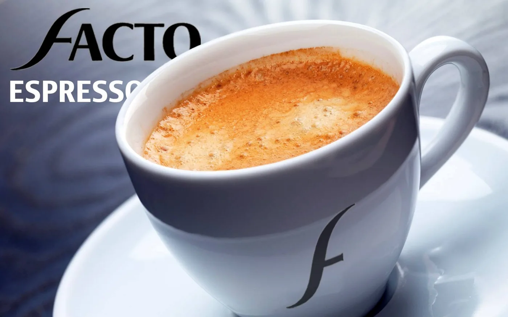

L'art du grand café,
à l'algérienne.
Grand Arabica, Pure Robusta, Sélection : trois cafés torréfiés et moulus avec exigence, pour accompagner chaque moment de la journée.
Facto sélectionne, torréfie et conditionne des cafés pensés pour les familles algériennes, du premier fenjal du matin à la qahwa partagée de l'après-midi.
Trois cafés, trois caractères.

Grand Arabica
Doux, floral, tout en rondeur. Le café des après-midis partagés.

Pure Robusta
Corsé, dense, généreux en crème. Pour ceux qui aiment le café fort.

Sélection
L'équilibre signature de la maison, entre finesse et caractère.

Un café qui rassemble la maison.
Avec les gâteaux du goûter, après le repas ou autour d'une table de fête, le café Facto se partage. Une mouture régulière, un goût constant d'un sachet à l'autre : c'est notre promesse.
Notre histoire →Thé & Espresso.


Du grain à la tasse.
Chaque étape est maîtrisée pour offrir une tasse régulière, riche et parfumée.

La sélection
Des grains choisis pour leur profil aromatique, Arabica et Robusta.

La torréfaction
Un degré de torréfaction adapté à chaque café, de la douceur à l'intensité.

La tasse
Une mouture fine et un sachet refermable qui préservent les arômes.


Distribuez Facto.
Supérettes, grossistes, cafés, hôtels et restaurants : rejoignez le réseau de distribution Facto partout en Algérie.
- Gamme complète Café moulu, thé, capsules
- Supports en point de vente Présentoirs & PLV
- Animations Dégustations en magasin
Facto au quotidien.